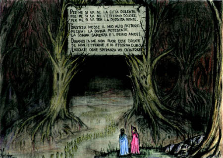

Canto IIIA porta do Inferno - Vestíbulo
|
|  |
| Dante e Virgílio diante da entrada do Inferno. Ilustração de Helder da Rocha. |
- Não tenhas medo - respondeu Virgílio, experiente - mas não sejas fraco! Aqui chegamos ao lugar, do qual antes te falei, onde encontraríamos as almas sofredoras que já perderam seu livre poder de arbítrio. Não temas, pois tu não és uma delas, tu ainda vives.
Em seguida, Virgílio segurou minha mão, sorriu para me dar confiança, e me guiou na direção daquele sinistro portal.
Logo que entrei ouvi gritos terríveis, suspiros e prantos que ecoavam pela escuridão sem estrelas. Os lamentos eram tão intensos que não me contive e chorei. Gritos de mágoa, brigas, queixas iradas em diversas línguas formavam um tumulto que tinha o som de uma ventania. Eu, com a cabeça já tomada de horror, perguntei:
- Mestre, quem são essas pessoas que sofrem tanto?
- Este é o destino daquelas almas que não procuraram fazer o bem divino, mas também não buscaram fazer o mal. - me respondeu o mestre. - Se misturam com aquele coro de anjos que não foram nem fiéis nem infiéis ao seu Deus. Tanto o céu quanto o inferno os rejeita.
- Mestre - continuei -, a que pena tão terrível estão esses coitados submetidos para que lamentem tanto?
- Te direi em poucas palavras. Estes espíritos não têm esperança de morte nem de salvação. O mundo não se lembrará deles, a misericórdia e a justiça os ignoram. Deixe-os. Só olha, e passa.
E então olhei e vi que as almas formavam uma grande multidão, correndo atrás de uma bandeira que nunca parava. Estavam todas nuas, expostas a picadas de enxames de vespas que as feriam em todo o corpo. O sangue escorria, junto com as lágrimas até os pés, onde vermes doentes ainda os roíam.
Quando olhei além dessa turba, vi uma outra grande multidão que esperava às margens de um grande rio.
- Quem são aqueles? - perguntei ao mestre.
- Tu saberás no seu devido tempo, quando tivermos chegado à orla triste do Aqueronte. - respondeu, secamente.
Temendo ter feito perguntas demais, fiquei calado até chegarmos às margens daquele rio de águas pantanosas e cinzentas.
Chegava um barco dirigido por um velho pálido, branco e de pêlos antigos. Ele gritava:
- Almas ruins, vim vos buscar para o castigo eterno! Abandonai toda a esperança de ver o céu outra vez, pois vou levar-vos às trevas eternas, ao fogo e ao gelo!
Quando ele me viu, gritou:
- E tu, alma vivente, te afasta desse meio pois aqui só vem morto! - Vendo que eu não me mexia, mais calmo, falou - Tu deves seguir para outro porto, onde um outro barco, maior, te dará transporte.
- Caronte, te irritas em vão! - intercedeu o mestre - Lá, onde se pode o que se quer, isto se quer, e não peças mais nada!
Caronte então se calou, mas pude ver que seus olhos vermelhos ainda ardiam de raiva. As almas, chorando amargamente, se amontoavam na orla e Caronte as embarcava, uma a uma, batendo nelas com o remo quando alguma hesitava. Depois seguiam, quebrando as ondas sujas rio Aqueronte, e antes de chegarem à outra margem, uma nova multidão já se formava deste lado.
Enquanto Virgílio me falava sobre as almas que atravessavam o rio, houve um grande terremoto, seguido por uma ventania que inundou o céu com um clarão avermelhado. O susto foi tão intenso que eu desmaiei e caí num sono profundo.